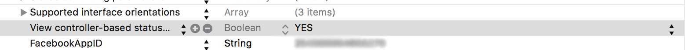

AppFriends iOS SDK Documentation
Welcome to the AppFriends iOS SDK documentation! You can integrate the SDK via Cocoapods. The SDK is used to signup and authenticate users, provide turn-key and modern UI components, give control of the social features and data, and so on.
We support both Objective-C and Swift. You can view code examples in the dark area to the right, and you can switch the programming language of the examples with the tabs in the top right.
You can download our Swift demo project and Objective-C demo project from github.
Integration
Cocoapods
To integrate AppFriends iOS SDK to your Xcode iOS project, add this line in your Podfile
pod 'AppFriends'
Also, add use_frameworks! to the file. eg.
platform :ios, "8.0" use_frameworks! ...
Include Header for ObjC Projects
To use the SDK, include the header:
#import <HacknocraftiOS/HacknocraftiOS.h>
Add Bridge Header for Swift Projects
Add #import <HacknocraftiOS/HacknocraftiOS.h> to your bridge header.
For details on how to use bridge header and library in swift project, please follow this guide
Initialization
After logging into your admin panel, and created your application, you can find your App ID and App Secret. Then use them in the initialization.
Initialize AppFriends in Application Delegate didFinishLaunchingWithOptions method.
Objective-C
[HCWidget.sharedWidget initializeWithApplicationKey:@"p8tnnIRmsl4cJngsH2rxGwtt" secret: @"34vRadekQhhQohgDNTCDDQtt" configuration:nil // set to nil for default configuration withLaunchOptions:launchOptions];
Swift
HCWidget.sharedWidget()
.initializeWithApplicationKey("p8tnnIRmsl4cJngsH2rxGwtt", secret: "34vRadekQhhQohgDNTCDDQtt", configuration: nil, withLaunchOptions: launchOptions)
Build Initialization Options
To initialize the SDK, you can pass in a NSDictionary
| Key | Type | Description |
|---|---|---|
| kHCDefaultSocialWidgetOpenDirection | NSInteger | Enum HCSocialWidgetOpenDirection This value will dictate the widget open direction. |
| kHCDefaultSocialWidgetWidth | Float | set width of the widget window. Max value is screen width - 20, and min value is 300. |
User Authentication
Before your users can start enjoying AppFriends, they need to have an AppFriends account. Login the user by invoking:
Objective-C
[[HCWidget sharedWidget]loginWithUserInfo:@{ kHCUserName: @"username", kHCUserAvatar: @"https://cdn0.iconfinder.com/data/icons/iconshock_guys/128/andrew.png", // optional kHCUserAppID: @"3000", kHCUserEmail: @"test@gmail.com" // optional } completion:nil];
Swift
HCWidget.sharedWidget().loginWithUserInfo ( [ kHCUserName: "username", kHCUserAvatar: "https://cdn0.iconfinder.com/data/icons/iconshock_guys/128/andrew.png", // optional kHCUserAppID: @"3000", kHCUserEmail: "test@gmail.com" // optional ]) { (success, error) in }
The user's AppFriends account will be associated with the user's account in your app. To correctly display the user information, please fill the following information in the userInfo dictionary:
| Key | Type | Description |
|---|---|---|
| "username" | text | the username |
| "avatar" | text | optional, the full URL of the user's avatar |
| "id" | text | optional, the user's userID in your own app. If userID is not provided here, we will assign an ID to this user. |
| "email" | text | optional, the user's email |
| "token" | text | optional, assign a token to the user. If provided at signup, the later login has to provde the same token. If the user's token has changed, please use admin secret to update the user's token. |
Display Widget Bubble
To display the widget bubble, use the following code in viewDidAppear of your view controller.
Objective-C
[[HCWidget sharedWidget]showWidgetBubbleOnViewController:self allowScreenShotSharing:YES atPosition:CGPointMake(self.view.frame.size.width - 30, 80) completion:^(BOOL success, NSError *error) { if (!success) { NSLog(@"%@", error); } }];
Swift
HCWidget.sharedWidget().showWidgetBubbleOnViewController(self, allowScreenShotSharing: true, atPosition: CGPointMake(self.view.frame.size.width - 60, 160)) { (success, error) in
// callback block
}
Styling
AppFriends UI can be customize to fit the style of your own app. To customize the UI, please use HCWidget properties. For example:
// Setting the navigation bar icon highlight color to red [[HCWidget sharedWidget]setNavBarIconHighlightColor:UIColor.redColor];
Status Bar
AppFriends widget UI will try hide the status bar while the widget is being presented. This will give the maximum layout for your users. To allow this behavior, you need to allow view controller based status bar in the plist:

Above: plist change to allow status bar adjustment
Show the Widget on your App
After the initialization is finished. You can now show the widget on the views in your App by calling:
+ (void)showSocialWidgetOnViewController:(UIViewController *)viewController
viewControllerPath:(NSString *)path
disableScreenshot:(BOOL)disable
completion:(void (^)(void))complete
The viewController parameter is the UIViewController, which is presenting the widget. We recommand showing the widget in viewDidAppear method of your view controller. For detail info on this method, please go to class document.
Open a Specific View
If you want to open a specific view of the widget, you can do that by using our API.
Objective-C
// open entire widget and go the user's dialog list [HCWidget openView:@"/dialogs/list" completion:nil]; // open the user's dialog list alone [HCWidget openSingleView:@"/dialogs/list" completion:nil];
Swift
// open entire widget and go the user's dialog list HCWidget.sharedWidget().openView("/dialogs/list") { (success, error) in // callback } // open the user's dialog list alone HCWidget.sharedWidget().openSingleView:("/dialogs/list") { (success, error) in // callback }
Content Sharing with AppFriends
A great feature with AppFriends is being able to share your app content within your app among your users or to outside the app in places like Facebook, Twitter, Instagram, SMS and so on. To utilize this feature, you need assign a path to each of your page (app screen). You can also use additional parameters to help your app with navigation.
Path and Parameters
A path with parameters looks like an URL without the host, for example, /profile?id=23 could be a path that describes the profile page of your user with ID equal to 23.
To set the path and parameter of the current screen, you can call:
[HCWidget setScreenPath:@"/profile?id=23"]; or, when you show the widget button, include the screen path when you present the widget button on your view controller: [HCWidget showSocialWidgetOnViewController:self viewControllerPath:@"/profile?id=23" disableScreenshot:NO completion:nil];
Handling callbacks
After you set the path with parameters for your screen, you should then handle callback from our widget to navigate to this screen. For example, when someone shared his profile page to the chat, another user can tap the link below the shared screenshot. Then our widget will trigger the callback here:
[HCWidget mapURL:@"/profile" toCallback:^(NSDictionary *params) { NSString *userID = params[@"id"]; // your logic to navigate to the user's profile page with the ID value. }];
Deeplinks
When a user shares screenshot from your app, a deeplink will be generated and shared with the screenshot. If the screenshot is taken from a place you have assign a path and parameters to, the information will also be included in the deeplink. When users clicks on the deeplink and install/open the app, we will trigger the callback with the path and parameters you provided.
To receive deeplink actions, you need insert calls in the correct places in your application delegate:
+ (BOOL)openURL:(NSURL *)url sourceApplication:(NSString *)sourceApplication annotation:(id)annotation and + (BOOL)continueUserActivity:(NSUserActivity *)userActivity
See class documents for more detail.
Public Chat Channels
By default, we create a global public chat channel for all of your users to chat. You can create, edit and remove public chat channels. You can either do it from the AppFriends admin panel or via our API.
Private Group Chat
You can create private chat group using the HCWidget methods. In each private chat group, you can only include the users that you want to invite, and the chat group will not be visible to others. Users can leave the group if they want to. Please see class document.